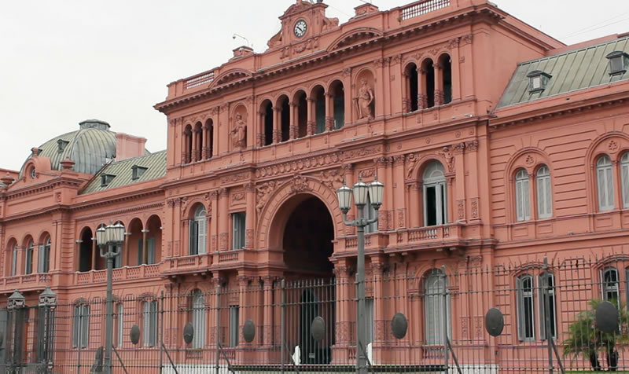
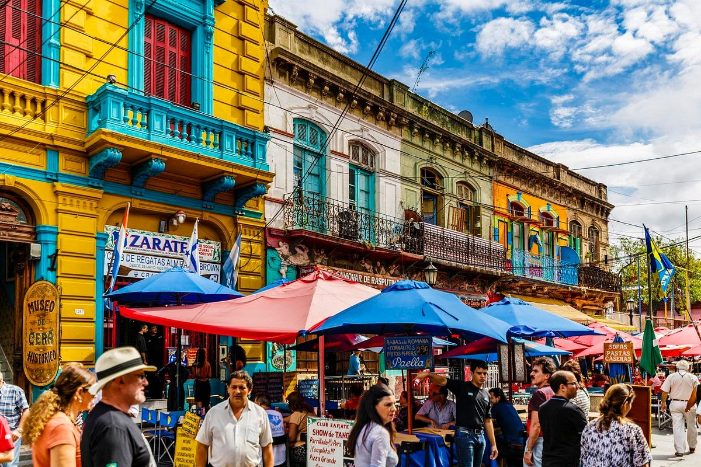

Buenos Aires fue fundada en 1536 por Pedro de Mendoza y refundada en 1580 por Juan de Garay. La ciudad ha sido un centro de comercio y cultura desde el periodo colonial y desempeñó un papel importante en la independencia de Argentina en 1816.
La Casa Rosada es la sede del Poder Ejecutivo y uno de los edificios más emblemáticos de la ciudad. Su fachada color rosa es famosa y representa un símbolo del país.
Ubicado en la Avenida 9 de Julio, el Obelisco es un ícono de Buenos Aires y un punto de encuentro para celebraciones y eventos importantes.
Conocido por sus coloridas casas y su vibrante cultura de tango, el barrio de La Boca es un destino turístico único en la ciudad.
Buenos Aires es conocida por su deliciosa carne, especialmente el asado, y su gran variedad de platos tradicionales. También es el hogar de famosos cafés y pastelerías que representan la cultura porteña.
El tango nació en Buenos Aires y es un símbolo de la ciudad. Es común ver shows de tango en bares y teatros, y muchas escuelas ofrecen clases para turistas y locales.
Buenos Aires organiza varios festivales culturales como el Festival de Tango, la Feria del Libro y el Festival Internacional de Cine Independiente.